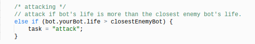
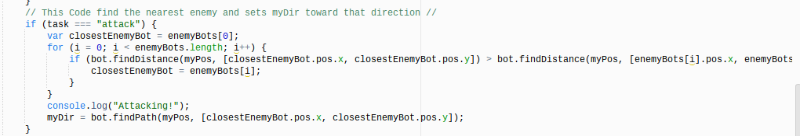

This part of the Global Data code holds the position of my bot using an array.

This part of the Global Data code first determines which bots are the enemies and then pushes them into the array called enemyBots. This is necessary so that my bot is not mistaken for an enemy bot. The second array determines the positions of the enemy mines.
"What To Do Code"
This if statement sets the variable "task" to equal taverns if my bot's health is less than 60. Going to the taverns will help the bot gain back its health. I was able to find the health of my bot using bot.yourBot.life.
This else if statement sets the variable "task" to equal attack only if the taverns condition is false. The condition says that if my bot's health is greater than the closest enemy bot, then it will attack it, but if it has a lower health than the closesy enemy, then it will move on to the next condition.
If neither of the previous tasks work, the program will run the freemines task. This condition tells the bot to continue mining.
"How To Do It Code"
This part of the code tells the bot HOW to complete the task from the WHAT section.
This code runs if the task is set to freemines. It finds the distance to the closest mines (free or taken), and sets the closestmine to whicever one is closer. The program makes the bot go to the position of the mine and consoles the message "Claiming a Free Mine!"
This code runs if the task is set to taverns. Just like the freemines code, it finds the nearest tavern and sets my bot toward that direction.
This code runs if the task is set to attack. It finds the closest enemy and sets my bot toward that direction.
